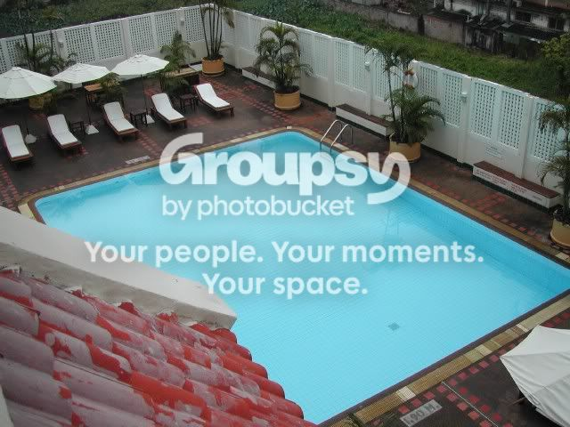

Yuunagi เขียน:มีตู้หนังสือแล้วต้องมีหนังสือขอแบบเปิดได้เมื่อกดใช้น่ะค่ะ
Iris card collection book ไง

http://eco.froztic.in.th/archive/ecofanclub/
http://eco.froztic.in.th/archive/ecofanclub/viewtopic.php?f=26&t=66062
Yuunagi เขียน:มีตู้หนังสือแล้วต้องมีหนังสือขอแบบเปิดได้เมื่อกดใช้น่ะค่ะ
 แอ้.....
แอ้..... ประมาณแบบตั้งให้มันวาปไปไหนพอกดใช้ก็วาปไปแบบนี้ (แบบวิญญาณหลุดเหมือนตอนทำเนโกะแฝดอ้ะ
ประมาณแบบตั้งให้มันวาปไปไหนพอกดใช้ก็วาปไปแบบนี้ (แบบวิญญาณหลุดเหมือนตอนทำเนโกะแฝดอ้ะ  )
) ละก็ เดินขึ้นบันไดได้ พอขึ้นไปขั้นบนสุดจะมีแท่นวาร์ปไปชั้น2ได้ ( เวอร์ละ
ละก็ เดินขึ้นบันไดได้ พอขึ้นไปขั้นบนสุดจะมีแท่นวาร์ปไปชั้น2ได้ ( เวอร์ละ  ) บลา ๆ มากมาย บอกไม่หมด อยากได้ เฟอร์นิเจอร์ ที่สามารถ สร้างฝนดาวตก บนบ้านลอยได้ หึๆๆเป็นไง เริดมะ พวกเรา
) บลา ๆ มากมาย บอกไม่หมด อยากได้ เฟอร์นิเจอร์ ที่สามารถ สร้างฝนดาวตก บนบ้านลอยได้ หึๆๆเป็นไง เริดมะ พวกเรา  [ฟ...ฟระ..ฝ..ฝน..ดาวตกกกกกก ก๊าซซซซ]
[ฟ...ฟระ..ฝ..ฝน..ดาวตกกกกกก ก๊าซซซซ]-คนหน้าตาดี- เขียน:อยากได้ไอเท็มเพิ่มจำนวนการวางของบนบ้านได้
อยากให้ ขึ้นชั้น 2 ได้ !!!!!!!!!!!!! ห้องน้ำ ที่มีอ่างแช่เท้า ละก็ ในเมื่อว่า เปลี่ยนสีน้ำในออนเซ็นได้แล้ว ก็อยากให้มันมีกดว่า เดือด พอกดมันก็จะกลายเป็นอ่างจากุซซี่ !!! อยากให้มีสระว่ายน้ำที่ลงไปจริง ๆ ได้ ให้แบบให้น้ำมันใสเหมือนข้างล่างนี้เลยอ่ะ vvvvvvv
Trigger เขียน:caity เขียน::first11: อยากให้เอา สวนลอยฟ้าเราไป link/join ติดกับสวนขึ้นอื่นได้ค่ะ แบบอยู่ข้างบนเดินไปหากันได้หรือมองเห็นกันได้
กดไลค์
:เด็กน้อย(มั่ง): เขียน:Trigger เขียน:caity เขียน::first11: อยากให้เอา สวนลอยฟ้าเราไป link/join ติดกับสวนขึ้นอื่นได้ค่ะ แบบอยู่ข้างบนเดินไปหากันได้หรือมองเห็นกันได้
กดไลค์
เอาด้วย > __ <